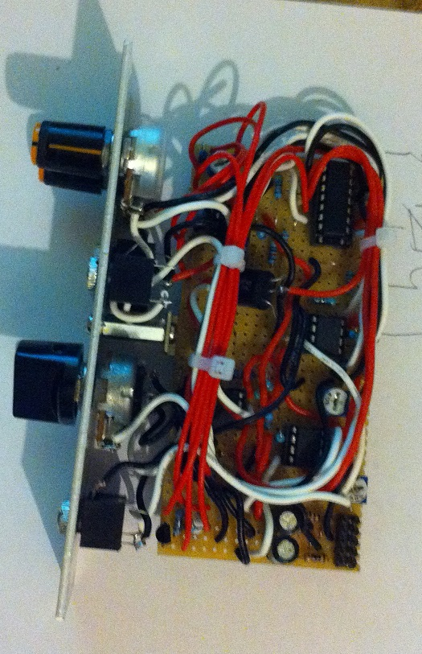

VACTROL FILTER
The vactrol is a key elements in many Buchla design. it is a component which isn't linear and slow which make it very disctinctive in the sound of a filter. The major drawback is obviously its slow response and its price. Don't expect audio modulation or others violent thing with it. Another issue is its inconsistency. One interesting thing to do with it, is to "strike" it with a pulse. Fancy word. It simply means giving it a short pulse and let the component decay itself, it often gives you riging as well. Depending on the reference, the decay may be longer or shorter. Checking the datasheet for the particular one that you're using is important. This being said, it can't be simpler to use. The core is just un LED facing a photoresistor. The following schematic is based around a sallen key low pass filter switchable between VCA, 1pole and resonnant 2poles. The VCA part suffers from the slowness of the vactrol used whereas the filter modes give you that "vactrol" type of things. A CD4066 is used for the switching with a bit of transistor logic. The final version had the VCA mode removed (just changed the on/off/on switch by an on/on type, I haven't remade the circuitry I'm not that crazy) 
{kind=link}
{kind=link}